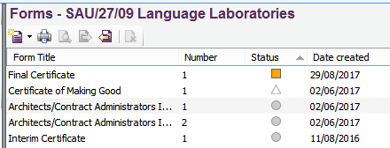
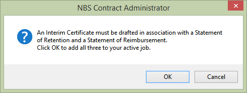
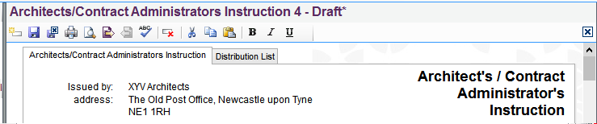

and can be edited.
and can be edited. and will only open in Read-Only format -
they can not be edited again.
and will only open in Read-Only format -
they can not be edited again. are still recallable however this will only be applicable to the last single most recent form issued in any job.
are still recallable however this will only be applicable to the last single most recent form issued in any job.Editing A Form |
Opening a form for editing
A form can only be edited if it is in a draft state or is recallable. Forms in the job have three status icons next to them:
and can be edited. and will only open in Read-Only format -
they can not be edited again.
are still recallable however this will only be applicable to the last single most recent form issued in any job.
Depending on the state of the form, there are various ways of opening a form:
a) Draft forms - the user can either:
b) Issued forms - the user can only view these in Read-Only format by either:
c) Recallable forms - the user will have to recall the form first before editing it. Once recalled
and brought back in a draft state, they can either:
Editing Forms
Where the information on several forms is related, these forms will always open together in the editor. The user will be notified with a pop up message stating if that particular form has other forms related to it and will open alongside it:

Once the user clicks OK to open the forms, the related forms are accessed via a row of tabs at the top of the form:
Wherever possible, NBS Contract Administrator will automatically complete or calculate the required information on the forms. The information requirements differ from form to form and detailed information is included in the editorial guidance. This can be accessed by clicking on View > Guidance > NBS Guidance.
See also:
Previewing and Printing a Draft Form
Issuing a Form
Recalling forms
Contract Administrator Guidance (helpful
advice and information about contract administration and communication)
Editing the Forms:
Architects/Contract Administrators Instruction
Clerk of Works Direction
Extension of Time
Final Certificate
Certificate of Non-Completion
Partial Possession by the Employer
Certificate of Practical Completion
Progress Payments
Adjustment of Completion Date
Record of Reimbursement of Advance Payment